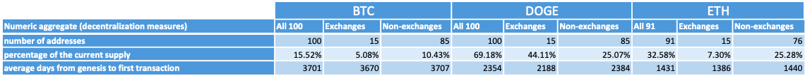

Whale Analysis of Bitcoin, Dogecoin, and Ethereum
Jul 2022 ~ Individual project
Length: 2m (at 0.5 FTE)
Programming language: Python (Pandas, NumPy, requests, Beautiful Soup, RE, datetime,
Matplotlib, seaborn)
Data:
- circulating supply of BTC, DOGE, and ETH, on 12.07.2022
- genesis date of Bitcoin, Dogecoin, and Ethereum (when the first block was processed and
validated on each blockchain)
- top 100 richest BTC, DOGE, and ETH addresses (on 12.07.2022), including their current balance, whether
they are an address owned by a centralized exchange (CEX), their number of transactions,
and the dates when they performed their first and last transactions.
Problem description:
Investigate the decentralization degree and trading patterns of the richest BTC, DOGE, and
ETH holders
Approach:
The first step involved acquiring the appropriate data. The figure below displays the sources
where the data was gathered. Accordingly, after the collection of the top 100 richest holders,
the total amount sent and the total amount received by each address were scraped from a block
explorer.

Afterward, the data was processed for analysis by converting the available variables to the
appropriate types, plotting variables to seek outliers, and extracting additional features,
such as the accumulation and offloading intervals and the number of days from genesis to the
first transaction. Lastly, various checks were performed to ensure the validity of the data,
which resulted in some addresses being deleted. For instance, every address needs to have at
least the same amount sent out as the total amount received since it is impossible to spend
an unavailable quantity of a cryptocurrency. However, three Ethereum addresses did not comply
with this. Another check verified if the date of the first transaction is always the date of
the first in-transaction because an address first needs to receive in order to spend. Again,
three other Ethereum addresses failed this inspection.
Results:
In the table below, one can see the numerical aggregations concerning the decentralization
measures of the three cryptocurrencies. Looking at the percentage of the current supply, one
can observe a considerable centralization degree in the case of Dogecoin, where the top 100
addresses hold roughly 70% of the total supply of DOGE. This number decreases to 33% for
Ethereum and 16% for Bitcoin. Furthermore, in the case of Dogecoin, the centralization is
even more pronounced taking into account that 44% of the total supply belongs to CEXs, which
are known to be government-liable entities, whereas, for Bitcoin and Dogecoin, the non-exchanges
hold the larger proportion.
Next, the average number of days from genesis to the first transaction suggests the most
early adopters for Ethereum, followed by Dogecoin and Bitcoin. This is also the opposite
order in which the three were deployed. Hence, one possible explanation is that, as the
crypto field increased in popularity, the richest accounts started investing faster.

The following table displays the numerical aggregations generated to provide valuable information
for comparing transactional patterns. When it comes to the values expressed in days, these were
rounded down, whereas, for the amounts in crypto, the entries were converted to a percentage
after being divided by the circulating supply of the respective coin, such that a comparison
inter-blockchain is viable.
Among the most important findings are the significant proportions of non-exchanges used solely
for accumulating BTC and DOGE in contrast to ETH, where the difference is not as substantial.
Then, one can notice the average number of transactions being very low for the richest,
non-exchanges holders of BTC, supporting that these accounts were mainly for accumulation
rather than trading. Nevertheless, this does not hold for Dogecoin, whose non-exchanges
were more active than the exchanges.
Additionally, one can observe a higher average of days from first in- to first out-transaction
for non-exchanges across the three cryptocurrencies. As expected, Ethereum has the lowest
intervals, probably due to its fastest transaction speed. Ultimately, Bitcoin holders had,
on average, a lengthier accumulation period, which was anticipated given the blockchain is
also the oldest among the three.